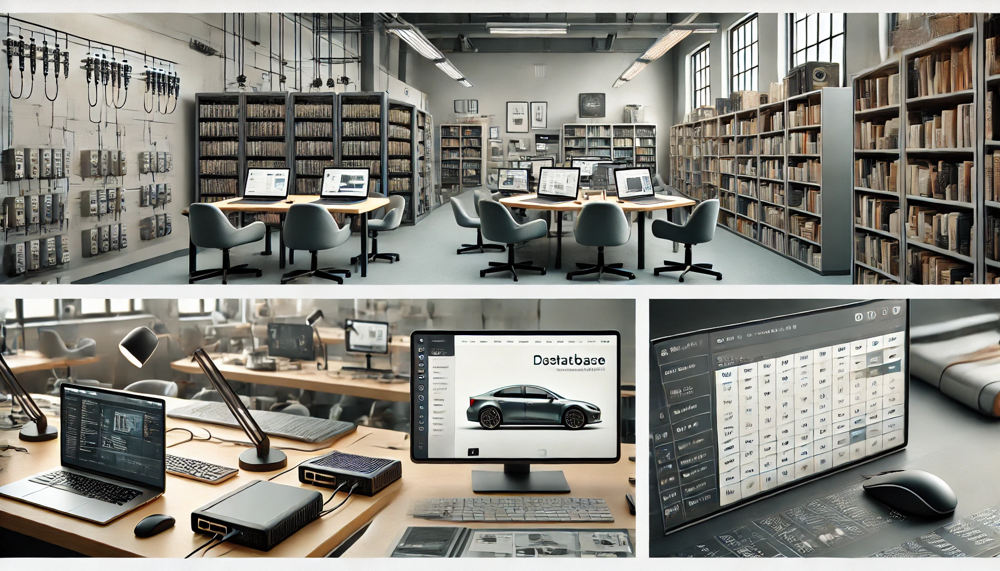

Portfólio

.webp)
Sou um formando em Suporte Informático, com foco em instalação, configuração e resolução de problemas de hardware e software. Possuo experiência em montagem e manutenção de computadores, diagnóstico de falhas e otimização de sistemas, garantindo soluções eficientes e conectividade estável para usuários e empresas.
Realizo configuração e suporte de redes, garantindo conexão estável e segura. Configuro roteadores, switches e redes Wi-Fi, soluciono problemas de conectividade e asseguro desempenho máximo. Ofereço soluções personalizadas para redes domésticas e empresariais, com foco na segurança, eficiência e minimização de interrupções.
Read moreOfereço montagem e manutenção de computadores para garantir desempenho e durabilidade. Realizo montagem personalizada, diagnóstico de falhas, limpeza física, atualização de hardware e instalação de sistemas operacionais. Meu serviço é focado em atender suas necessidades, aumentando a eficiência e prolongando a vida útil do equipamento
Read moreDesenvolvo sites simples e funcionais para portfólios, negócios ou uso pessoal. Crio designs responsivos, incluo imagens, vídeos e formulários de contato, e garanto fácil navegação. Ofereço soluções rápidas e acessíveis, ajudando você a estabelecer uma presença online profissional e eficiente
Read more
Nome: Kelvin António
Endereço: Malhampsene
Email: Kelvinchunguana@gmail.com
Phone: +258 869656071
Sou Kelvin António, técnico de suporte informático com paixão por redes de computadores, segurança cibernética e desenvolvimento web. Minha missão é ajudar empresas e indivíduos a maximizar o potencial de suas ferramentas tecnológicas, oferecendo soluções eficazes e personalizadas. Possuo experiência em montagem e manutenção de computadores, configuração e suporte de redes locais, além de criação de sites simples e funcionais. Busco sempre atualizar meus conhecimentos, acompanhando as tendências tecnológicas para fornecer serviços de qualidade e garantir um ambiente digital seguro e eficiente.
Read More.webp)